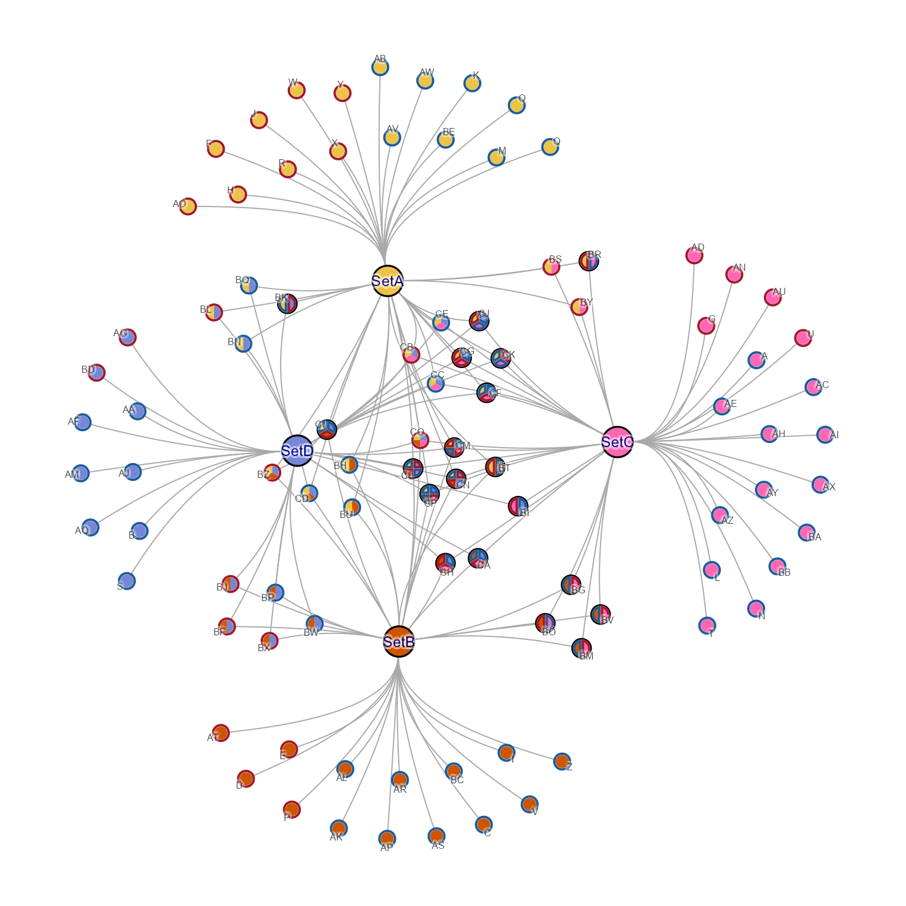
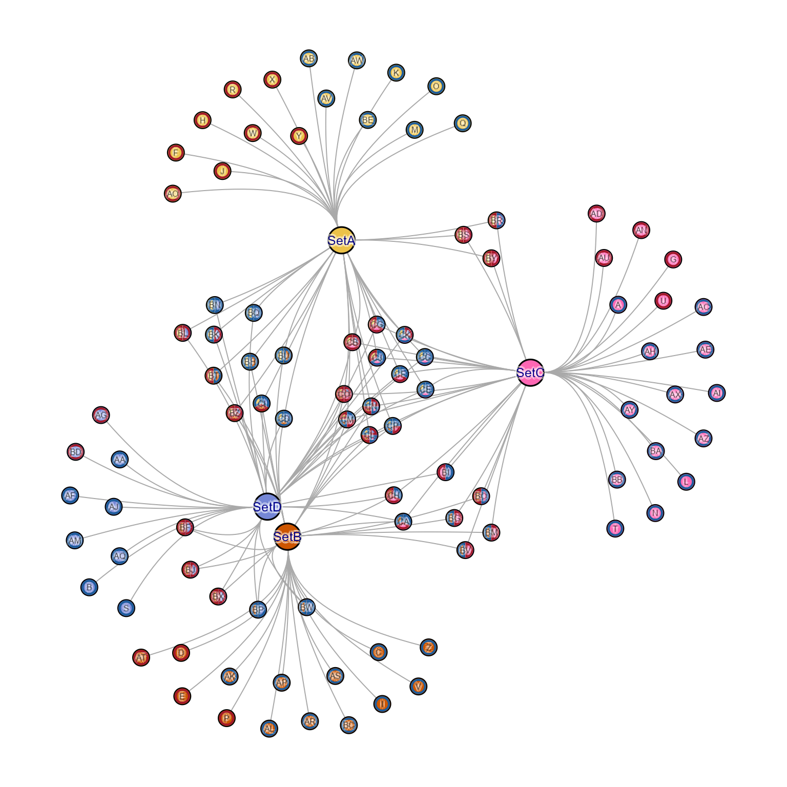
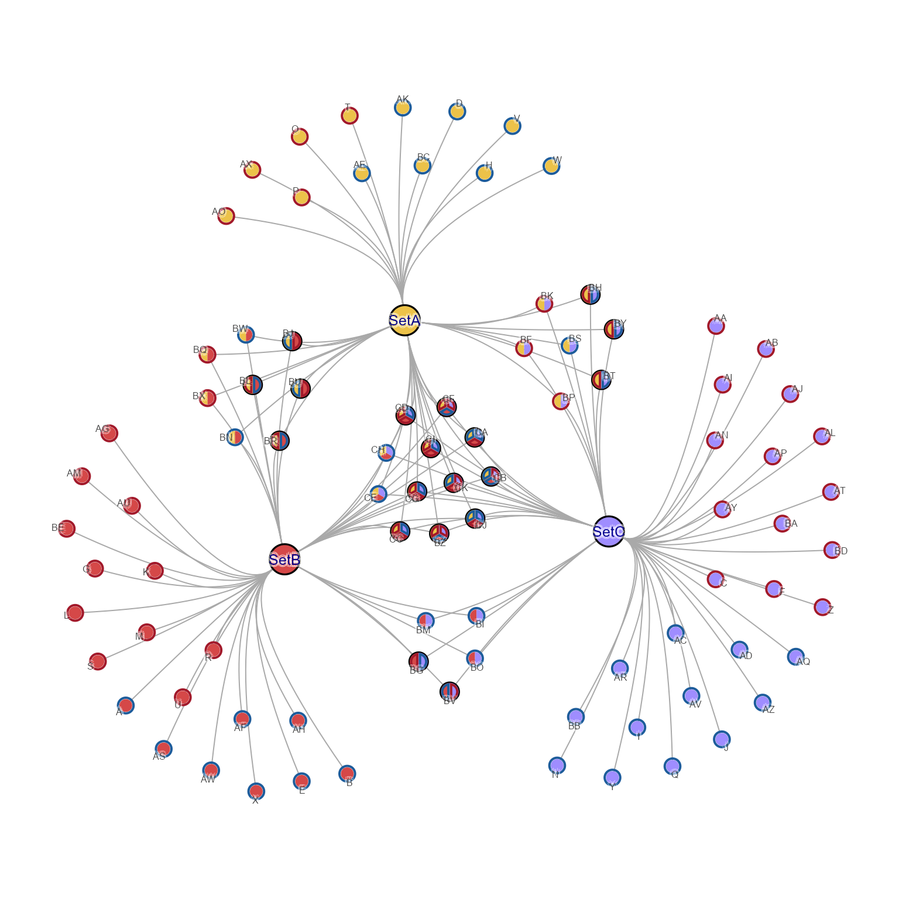
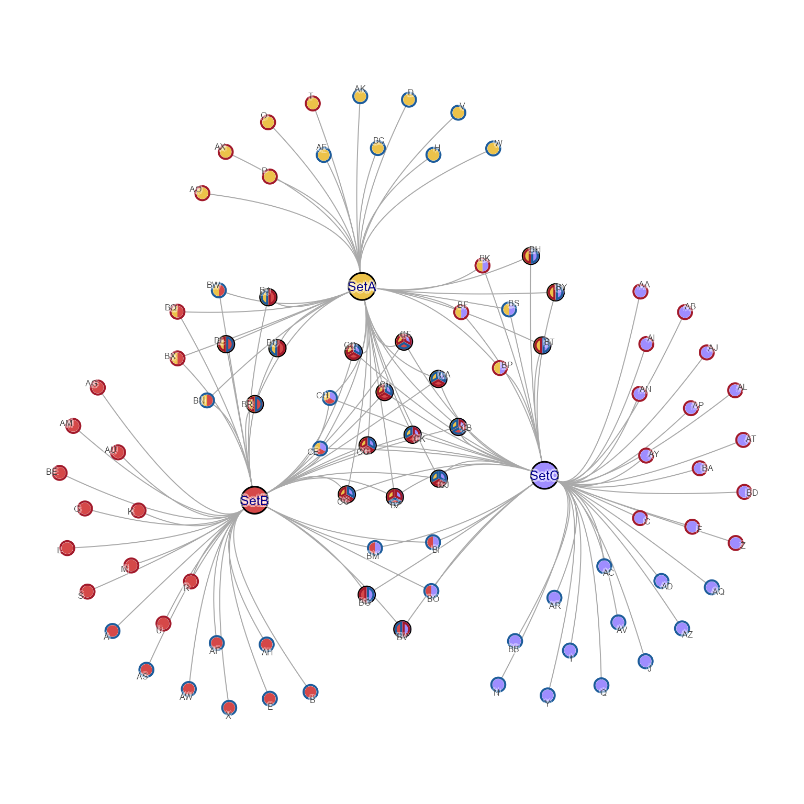
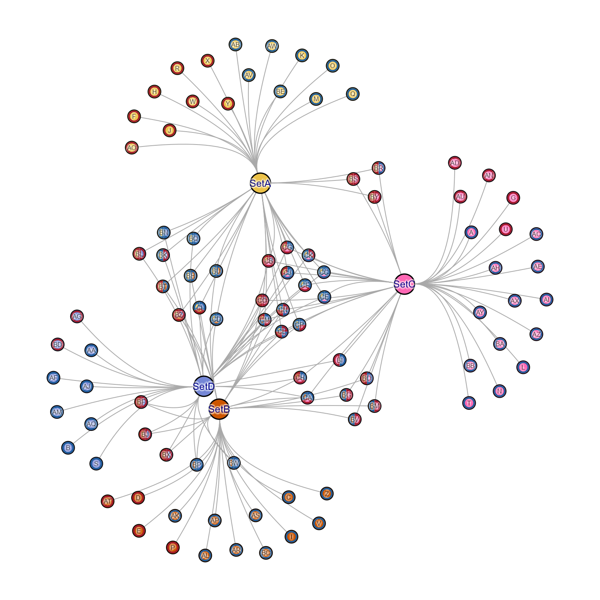
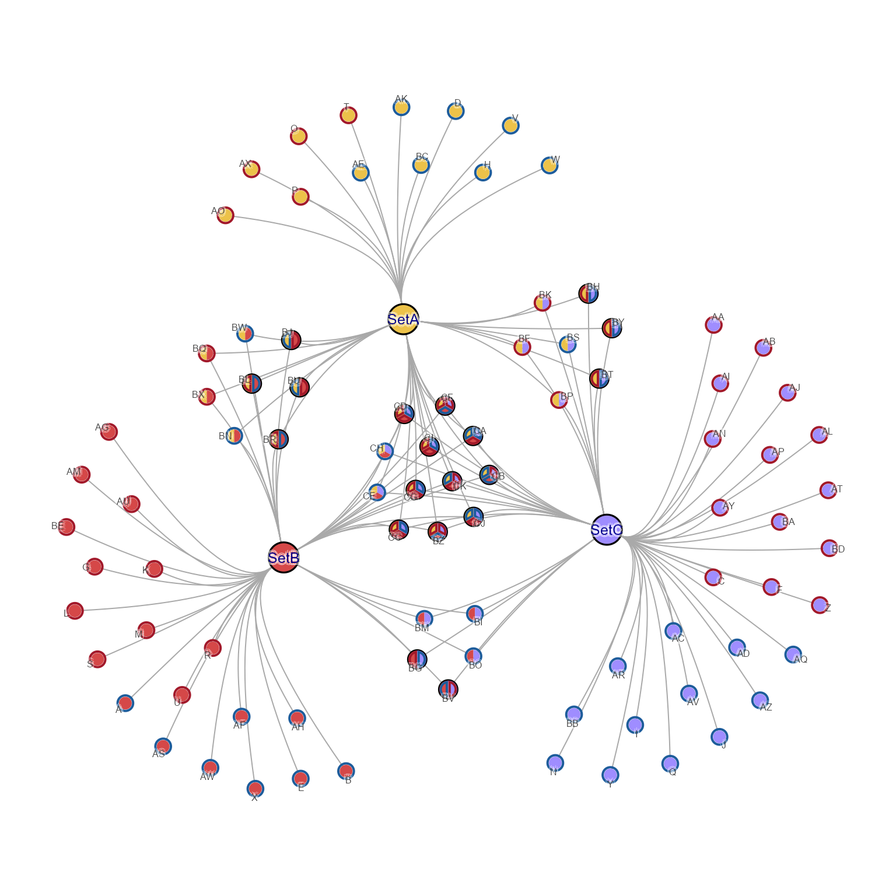
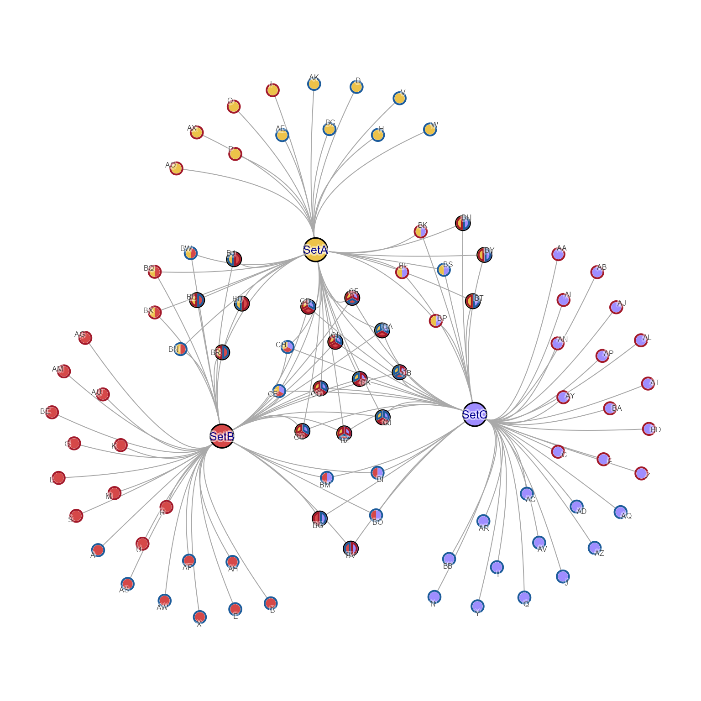
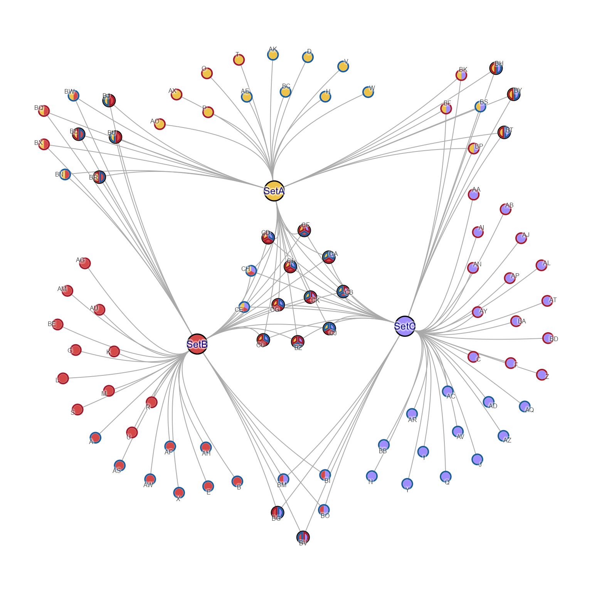
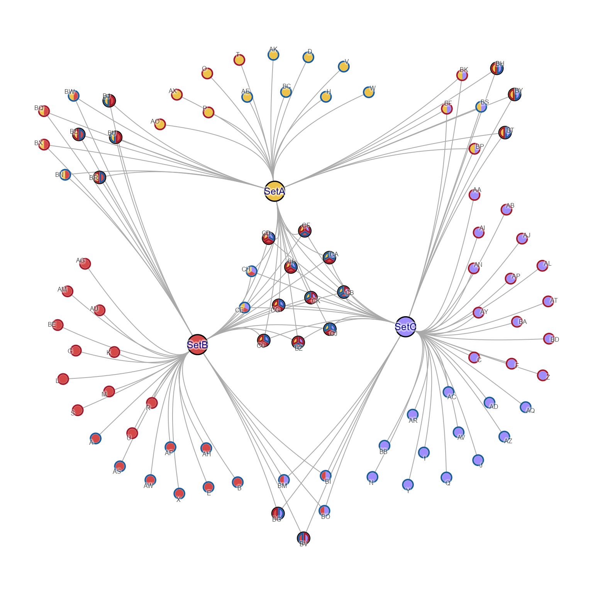

Make Cnet test igraph
Usage
make_cnet_test(
num_sets = 4,
overlap_counts = c(57, 20, 12, 5),
row_prefix = "",
column_prefix = "Set",
add_direction = TRUE,
set_colors = NULL,
seed = 123,
repulse = 3.5,
hide_solo_pie = TRUE,
...
)Arguments
- num_sets
integernumber of sets, default 4.- overlap_counts
integervector of counts, with length 'num_sets', default 'c(57, 20, 12, 5)'.- row_prefix
characterdefault "" used as a prefix for rows names.- column_prefix
characterdefault "Set" used as a prefix for set names.- add_direction
logicaldefault TRUE, whether to include direction.- set_colors
charactervector of colors per set.- seed
numericused to fix the random seed.- repulse
numericdefault 3.5, passed tolayout_with_qfr().- hide_solo_pie
logicaldefault TRUE, passed tomem2cnet().- ...
additional arguments are passed to
mem2cnet().
Value
igraph object containing Cnet concept network data, specifically
with vertex attribute 'nodeType' with values 'Gene' or 'Set'.
Details
This function simply creates an igraph object with attributes
expected for a cnet plot object:
node attribute
"nodeType"with valuesc("Gene", "Set").
It optionally derives random directionality when add_direction=TRUE,
and calls apply_cnet_direction() so node borders are updated
appropriately.
See also
Other jam cnet utilities:
adjust_cnet_nodeset(),
adjust_cnet_set_relayout_gene(),
apply_nodeset_spacing(),
bulk_cnet_adjustments(),
get_cnet_nodeset(),
launch_shinycat()
Examples
# by default, single-border-color pie is shown as circle
cnet1 <- make_cnet_test(border_lwd=2)
withr::with_par(list("mar"=c(0, 0, 0, 0) + 0.5),{
jam_igraph(cnet1, use_shadowText=TRUE)
})

# hide_solo_pie=FALSE shows every pie wedge bordder
cnet2 <- make_cnet_test(hide_solo_pie=FALSE, border_lwd=2)
withr::with_par(list("mar"=c(0, 0, 0, 0) + 0.5),{
jam_igraph(cnet2, use_shadowText=TRUE)
})
 # Set nodes can be adjusted, reorienting the Gene nodes
cnet2_adj <- adjust_cnet_set_relayout_gene(cnet2,
nodes=c("SetB", "SetD"),
x=c(-0.1, 0), y=c(0, -0.2),
repulse=3.6);
withr::with_par(list("mar"=c(0, 0, 0, 0) + 0.5),{
jam_igraph(cnet2_adj, use_shadowText=TRUE, label_dist_factor=0)
})

# nodeset spacing can be enforced
cnet3 <- make_cnet_test(num_sets=3)
withr::with_par(list("mar"=c(0, 0, 0, 0) + 0.5),{
jam_igraph(cnet3, use_shadowText=TRUE)
})

cnet3_sp <- apply_nodeset_spacing(cnet3,
percent_spacing=7)
withr::with_par(list("mar"=c(0, 0, 0, 0) + 0.5),{
jam_igraph(cnet3_sp, use_shadowText=TRUE)
})

# a specific nodeset can be individually adjusted
cnet3_adj <- adjust_cnet_nodeset(cnet3_sp,
set_nodes=list(c("SetA", "SetB")),
x=c(-0.2), y=c(0.2))
withr::with_par(list("mar"=c(0, 0, 0, 0) + 0.5),{
jam_igraph(cnet3_adj, use_shadowText=TRUE)
})
# Set nodes can be adjusted, reorienting the Gene nodes
cnet2_adj <- adjust_cnet_set_relayout_gene(cnet2,
nodes=c("SetB", "SetD"),
x=c(-0.1, 0), y=c(0, -0.2),
repulse=3.6);
withr::with_par(list("mar"=c(0, 0, 0, 0) + 0.5),{
jam_igraph(cnet2_adj, use_shadowText=TRUE, label_dist_factor=0)
})

# nodeset spacing can be enforced
cnet3 <- make_cnet_test(num_sets=3)
withr::with_par(list("mar"=c(0, 0, 0, 0) + 0.5),{
jam_igraph(cnet3, use_shadowText=TRUE)
})

cnet3_sp <- apply_nodeset_spacing(cnet3,
percent_spacing=7)
withr::with_par(list("mar"=c(0, 0, 0, 0) + 0.5),{
jam_igraph(cnet3_sp, use_shadowText=TRUE)
})

# a specific nodeset can be individually adjusted
cnet3_adj <- adjust_cnet_nodeset(cnet3_sp,
set_nodes=list(c("SetA", "SetB")),
x=c(-0.2), y=c(0.2))
withr::with_par(list("mar"=c(0, 0, 0, 0) + 0.5),{
jam_igraph(cnet3_adj, use_shadowText=TRUE)
})
 # several nodesets can be adjusted at once
cnet3_adj2 <- adjust_cnet_nodeset(cnet3_sp,
set_nodes=list("SetA,SetB", "SetA,SetC", "SetB,SetC"),
x=c(-0.2, 0.2, 0), y=c(0.2, 0.2, -0.2))
withr::with_par(list("mar"=c(0, 0, 0, 0) + 0.5),{
jam_igraph(cnet3_adj2, use_shadowText=TRUE)
})

# individual nodes can be nudged
cnet3_adj2_nudge <- nudge_igraph_node(cnet3_adj2,
nodes=c("T"), x=c(-0.02), y=c(0.1))
withr::with_par(list("mar"=c(0, 0, 0, 0) + 0.5),{
jam_igraph(cnet3_adj2_nudge, use_shadowText=TRUE, vertex.label.font=2)
})
# several nodesets can be adjusted at once
cnet3_adj2 <- adjust_cnet_nodeset(cnet3_sp,
set_nodes=list("SetA,SetB", "SetA,SetC", "SetB,SetC"),
x=c(-0.2, 0.2, 0), y=c(0.2, 0.2, -0.2))
withr::with_par(list("mar"=c(0, 0, 0, 0) + 0.5),{
jam_igraph(cnet3_adj2, use_shadowText=TRUE)
})

# individual nodes can be nudged
cnet3_adj2_nudge <- nudge_igraph_node(cnet3_adj2,
nodes=c("T"), x=c(-0.02), y=c(0.1))
withr::with_par(list("mar"=c(0, 0, 0, 0) + 0.5),{
jam_igraph(cnet3_adj2_nudge, use_shadowText=TRUE, vertex.label.font=2)
})
 # nodes can be nudged in larger sets using nodes_xy
cnet3_adj2_nudge2 <- nudge_igraph_node(cnet3_adj2,
nodes_xy=list(
T=c(-0.02, 0.2),
AK=c(0.02, 0.2),
AG=c(-0.2, 0),
Q=c(0.2, 0)
))
withr::with_par(list("mar"=c(0, 0, 0, 0) + 0.5),{
jam_igraph(cnet3_adj2_nudge2, use_shadowText=TRUE, vertex.label.font=2)
})
# nodes can be nudged in larger sets using nodes_xy
cnet3_adj2_nudge2 <- nudge_igraph_node(cnet3_adj2,
nodes_xy=list(
T=c(-0.02, 0.2),
AK=c(0.02, 0.2),
AG=c(-0.2, 0),
Q=c(0.2, 0)
))
withr::with_par(list("mar"=c(0, 0, 0, 0) + 0.5),{
jam_igraph(cnet3_adj2_nudge2, use_shadowText=TRUE, vertex.label.font=2)
})